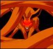

Forums galactiques > Taverne galactique : lieu de discussion informel > notation sur le forum officiel
Pages : 1
chrome 31/03 ETU 02:56 | HRP Je rappelle a NECROMANCIEN que les notations sur le forum officiel doivent rester neutre et doivent servir a ameliorer ce forum non pas a sanctionner une prise de position...s attacher a voter systematiquement presentation baclee alors qu il n y a pas lieu risque de creer le chaos sur le F. O...HRP |
tsumi 31/03 ETU 07:32 | hrp : Mais chrome, dis moi, tu te moque de qui là???? Tu viens de caser une rafale de presentation baclee et de trucs du genre parce que tu es vexé des réponses à tes postes à la c... et après tu te permet de poster ce genre de messages? J'halucine, c'est l'hopital qui se moque de la charité... Tu agissait déjà comme ca il y a un mois et on t'avais tous repris à l'ordre. Nan mais là il faut faire quelquechose pour toi... à commencer par t'apprendre les mots 'jeu' et 'règles'. // |
chrome31/03 ETU 08:26 | hrp:toi aussi tsumi tu as vote contre moi sans justification.c est la reponse du berger a la bergere.c est le debut de la fin donc je sais a quoi m en tenir avec vous 2 ..hrp |
| Arioch Nemesis  31/03 ETU 10:09  | Tout à fait... Dans ce cas, expliquez moi le "orthographe insuffisant" visant mon message critiquant votre orthofascisme ? C'est pitoyable... |
tsumi31/03 ETU 10:47 | Désolé chrome de t'apprendre que je note mal les posts qui sont mauvais, simplement. Si tu es de ceux là, c'est juste que le post était mauvais, ne cherche pas d'excuse. Maintenant amuses toi comme tu veux à noter comme un boulet les messages qui te dérangent car tu es visé dans ceux ci (ton perso, pas toi a l'origine). Arrivera tu à passer au dessus de tes frustations? si tu poste un post bien, perso je vois pas pourquoi je le saquerais, t'es de mauvaise foi j'ai retrouvé des posts ou je t'ai bien noté. Tu t'en tiens à ce que tu veux, mais ouvrir un topic bidon basé sur des accusations, peut être vraie, j'ai pas vérifié, mais sachant que tu en fait autant, chepa, c'est pitoyable. Et j'arête de poster ici, ca craint. |
Folken Fanel 31/03 ETU 10:59 | Bon on repart, pas de notation à l'affinité, un point c'est tout. Soignez votre post, évitez ceux d'une ligne ou deux trop qui appariassent trop souvent et surtout, surtout, surtout (oui oui j'insiste!!) notez à chaque fois comme si vous alliez devoir vous justifier devant Dieu, c'est tellement plus simple et il y aura moins d'histoire. Je ne donne raison à personne ni tord d'ailleurs. (PS : Prenez exemple sur Tsumi ou sur Leto, pour des posts toujours irréprochables) |
Thâois 31/03 ETU 14:02 | et mon HS... Chrome via mon dernier post... allons bon, ce n'est qu'un jeu, J'aime pas ton perso mais j'ai rien contre le joeur, d'ailleurs, je ne t'ai mis qu'un HRP et encore, j'ai expliqué pkoi. |
Folken Fanel31/03 ETU 15:03 | Vrai vrai et revrai... Regardez, Thaois et Folken peuvent pas se sacquer, ce qui n'empeche que japprécie le joueur. |
chrome31/03 ETU 18:49 | Je n ai jamais dit le contraire.Le joueur est anonyme et je n ai rien contre personne ici..J aime simplement etre la tique dans ta barbe Thaois..c est mon perso.. |
Mighty Goat 31/03 ETU 22:48 | N'empêche, ce serait cool d'arrêter les posts de deux lignes pour rien dire de mieux qu'un sujet de taverne... C'est limite hors sujet, comme par exemple la petite dispute dans le post qui était à l'origine écrit par le pôpe et pour le pôpe. Voilà, j'ai râlé, je sors... Mais avant, je voudrais rassurer ceux qui comme moi sont un peu las des disputes éternelles tournant autour de Thâois mais n'ont eux-mêmes pas le temps d'écrire en semaine: Mon petit doigt me dit qu'on devrait voir apparaître quelques jolis posts dans l'A.G. ce week-end... J'ai un super petit doigt que m'a prêté Folken et qui semble ne jamais se tromper. |
Aëschma31/03 ETU 23:28 | Je suis d'avis de Mighty Goat, j'en ai un peu marre de voir des postes de deux lignes qui ne servent à rien sauf pourrir l'assemblé. Certes c'est peut être ton personnage de jouer à taquiner le Nain mais bon ca devient vite soualant de te voir dire, "Thâois tu es tout petit" (il faut au moins un niveau steevy moins 5 pour trouver ca, c'est un nain, nous avons tous compris ca as besoin de nous le redire toutes les trois secondes), Thaois ton marteau est trop gros pour toi..." Une deux fois c'est bon mais là cela fait plus d'une semaine que ca dure, il faudrait peut etre pensé à évoluer... Même remarque pour mon cher ami Thaois, ... J'ai idée qu'il faudrai mettre une note message inutile... J'espère sincerement que l'AG redeviendra comme elle était avant. Et comme dirai Mighty Goat j'ai l'idée moi aussi que l'AG va se réveiller... Enfin je l'espère car sinon je vais vraiment commencer à m'endormir. Cordialement |
Thâois01/04 ETU 00:56 | qd on me rabaisse par des petites soubrette, il est difficile de répondre par un bon post... et qd on m'attaque sur l'Assemblée par une ligne du genre "jeux de Nain jeux de Vilain.. que pouvez vous répondre d'autre que jeux de Chrome, jeux de Paume... je n'ai guere le choix des armes Un bon post est plus facile pour rebondir dessus et en refaire un bon derriere, un post d'une ligne inutile ne redonnera qu'une réponse inutile dans l'Assemblée mais utile via ce post... que puis y faire |
Mighty Goat01/04 ETU 02:12 | là n'est pas la question, c'est pas à celui qui commence qui sera fautif... je n'accusais personne en particulier, mais je faisais une remarque générale... Mon petit doigt frétille pour du mouvement à l'A.G. très bientôt. |
Pages : 1
Forums galactiques > Taverne galactique : lieu de discussion informel > notation sur le forum officiel